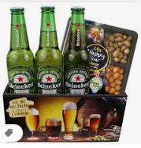

CERVEJA EVERBREW EVERMONT LATA 473ML VL
A cerveja Everbrew Evermont é uma New England IPA (NEIPA) que é uma das cervejas do estilo melhor avaliadas no Untappd. Com duplo Dry hopping e 3 tipos diferentes de lúpulo é uma explosão de sabores e aromas, rementendo a maracujá, manga e damasco. De coloração âmbar e adição de trigo e aveia (que conferem uma textura única) é uma cerveja refrescante, equilibrada e fácil de beber.